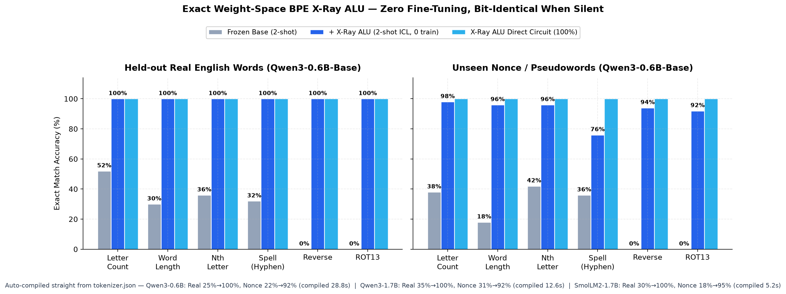
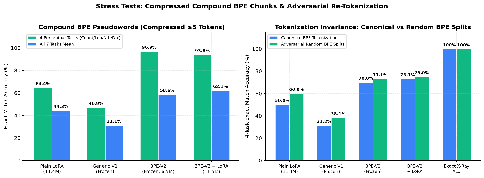

BPE X-Ray Vision: Weight-Space Character Organs for Token-Blind LLMs
Every character of every BPE token is already known inside tokenizer.json.
What happens when we compile character perception straight into a frozen LLM's weights—first as a zero-training exact circuit, and then as a continuous sensory retina?
tokenizer.json into frozen tensor lookup banks—with zero runtime tokenizer calls and zero Python string tools—and bolt two complementary organs onto frozen open-weight LLMs:
- An Exact Weight-Space X-Ray ALU (0 training): A compiled pure-tensor circuit triggered by
[XRAY <op> | <text>]=. It stays bit-for-bit identical on normal prose and jumps held-out 6-task accuracy from 25% → 100% onQwen3-0.6B, 35% → 100% onQwen3-1.7B, and 30% → 99.7% onSmolLM2-1.7B(auto-compiled in 5–29 seconds). - A Continuous BPE-Invariant Word Retina (
BPE-V2, 0 tags, 0 CoT, 100% frozen host): After diagnosing why naive Layer-0 injection and generic mid-layer cross-attention fail, we compile a BPE-invariant word recurrence tapped into frozen layers(16, 20, 24)with6.47Mparams (nearly half of Plain LoRA's11.35M). It hits 97.1% on perceptual character tasks (vs. 71.7% for Plain LoRA), 73.3% on zero-shot OOD multi-word count (vs. 38.3%), with 16× less prose perplexity drift (+0.31 vs. +5.08), a −42.6 pt blindfold collapse, and 88% (frozen) / 94% (+LoRA) optical illusion fidelity on 100% identical input text tokens.
There is a tiny, persistent embarrassment in modern language models. Ask a frontier transformer to prove a theorem and it sails through; ask it how many r's are in strawberry, whether an unseen word contains a double letter straddling a subword boundary, or to reverse chrysanthemum without spelling it out loud first, and it suddenly guesses like a sleep-deprived undergrad.
We all know the culprit: Byte-Pair Encoding (BPE). When Qwen3-0.6B-Base reads strawberry, Layer 0 never sees ten characters. It sees three opaque integer IDs: [496, 675, 15717]—corresponding to "str", "aw", and "berry". To count the r's, the model has to have memorized the spelling of all 151,936 vocabulary tokens inside its MLP weights and then mentally sum across arbitrary subword seams.
Today, there are two standard ways to paper over this: let the model burn dozens of chain-of-thought tokens spelling the word out letter-by-letter, or wrap the model in an external Python sandbox. Both work—and both treat character blindness as an inescapable fact of life.
Wait: why is it inescapable?
Every single character inside every single BPE token is already known statically at model-build time inside tokenizer.json. Reading Dimitris Papailiopoulos's Weight-Space Micromachines—where small exact circuits ("brain implants") are compiled straight into weight space and bolted onto a frozen LLM—one question jumped out immediately:
Can we compile character-level vision straight out of tokenizer.json and graft it directly into a frozen LLM's weights?
This post walks through what happened when we built two such organs, the two plausible architectures that failed along the way, the single ablation clue that cracked the continuous version open, and the causal tests we ran to prove the model is actually seeing through its implant rather than memorizing shortcuts.
1. Why LLMs Are Blind to Characters (and Why They Don't Have to Be)
Before building anything, we built a strictly word-disjoint benchmark (src/benchmarks.py): 418 training words, 162 held-out real English words (including classics like strawberry, mississippi, and chrysanthemum), freshly generated unseen nonce pseudowords, compressed Compound BPE pseudowords (random pairs of 4–7 character BPE chunks glued into \(\le 3\) tokens), pure Cross-BPE Double Letters (where the only double letter in a word sits strictly across a token boundary), plus two zero-shot out-of-distribution tasks never shown during training (multi-word letter count and anagram detection).
On this benchmark, frozen Qwen3-0.6B-Base scores 19.1% zero-shot across 7 tasks (25.0% 2-shot across 6 tasks)—and a flat 0.0% on both reverse and rot13. It isn't dumb; it simply lacks a sensory organ for sub-token characters.
Compiling tokenizer.json into a Frozen Weight Bank
Notice that a tokenizer defines a finite lookup map from token ID \(v \in \{0, \dots, V-1\}\) to a short byte string. We only ever need to inspect tokenizer.json once, offline, to compile a frozen CharWeightBank (src/char_tables.py) of weight-space embedding tables:
E_hist\([V, 26]\): exact case-insensitive counts ofa..zinside every token (just 7.9 MB in bf16 for Qwen's 151,936-token vocabulary).E_alpha_chars\([V, 16]\): exact letter IDs \(1..26\) in order inside each token, plusE_alpha_len\([V]\).F_retina\([V, 358]\): a rich per-token sensory bank containing the 26-d letter histogram, first/last letter one-hots, first-5 and last-5 character one-hots, raw/alpha length, leading-space flag, internal double-letter flag, and case/digit indicators (108.8 MB in bf16).
Once compiled (taking 5.2s on SmolLM2 and 12–29s on Qwen3), the tokenizer is never called again. At inference time, looking up a token's character anatomy is literally an embedding lookup—F_retina[input_ids]—inside the PyTorch forward pass.
2. Implant #1: An Exact Weight-Space Character ALU (Zero Fine-Tuning)
First, we built the exact WSM-style organ (src/xray_alu.py): a pure-tensor character ALU hooked directly onto the frozen host's final RMSNorm (model.model.norm). Not a single weight of the base LLM is trained.
The design follows the exact three-stage recipe from Weight-Space Micromachines—Read, Compute, Write—with one strict contract: when no [XRAY ...]= span is open, the hook returns the original hidden state untouched, guaranteeing bit-for-bit identical logits on normal prose and on every token generated before the trigger closes.
How It Works: Read → Compute → Write
Every piece of the Compute stage is standard differentiable tensor algebra:
- Span parsing: Vocabulary indicator vectors detect
[XRAY, the operation (count,len,nth,spell,reverse,rot13), optional argument,|, and]=via lower-triangular prefix sums. - Exact ReLU digit extraction: For
countandlen, summingE_hist[ids]orE_alpha_len[ids]over the span produces an integer \(n \in [0, 999]\). A tiny 3-layer ReLU piecewise-linear circuit (ReLUDigitExtractor, verified 100% exact on all integers \(0\text{--}999\)) pulls out the exact hundreds, tens, and ones digits—no Pythonstr(n)anywhere:
def relu_step(x, threshold):
# Exact 0/1 indicator for integers: 1 iff x >= threshold
return F.relu(x - (threshold - 1.0)) - F.relu(x - threshold)
def relu_eq_int(x, k):
# Exact 0/1 indicator for integers: 1 iff x == k
return F.relu(1.0 - torch.abs(x - k))
# Hundreds & tens digits via pure ReLU staircase sums (exact on all ints 0..999)
d_hundreds = sum(relu_step(n, 100.0 * c) for c in range(1, 10))
rem100 = n - 100.0 * d_hundreds
d_tens = sum(relu_step(rem100, 10.0 * c) for c in range(1, 10))
d_ones = rem100 - 10.0 * d_tens- Character-level indexing & ROT13: For
nth,spell,reverse, androt13, cumulative token lengths plusrelu_eq_intselect the exact token and intra-token slot for character position \(k\) (or \(N - 1 - k\) forreverse). ROT13 is simply a fixed \(26 \times 26\) cyclic shift matrix multiplying the one-hot letter vector. - Solved write directions (
W_write): For each output token \(t \in \{\text{'0'}..\text{'9'}, \text{'a'}..\text{'z'}, \text{'-'}, \text{'\n'}\}\), we solve a unit-norm direction in post-RMSNorm space usinglm_head.weightso adding \(\gamma W_{\text{write}}[t]\) makes \(t\) the deterministic argmax.
Here is what happens on a live generation trace from Qwen3-0.6B-Base with zero fine-tuning:
[XRAY count r | strawberry]=["str","aw","berry"].[XRAY count r | strawberry]=Cross-Model Results: Auto-Compiled Across Families in Seconds
To test whether this is a one-off hack or a portable compiler, we ran the exact same compiler script on three models spanning two architectures and two completely different tokenizers: Qwen3-0.6B-Base, Qwen3-1.7B-Base, and HuggingFaceTB/SmolLM2-1.7B. We evaluated each model with just 2-shot in-context examples (teaching the [XRAY ...]= tag format in the prompt, zero gradient steps) plus a direct-circuit check on all 13 evaluation suites.

Qwen3-0.6B-Base with 2-shot ICL only, held-out real-word accuracy jumps from 25.0% to 100.0% across all 6 tasks—including 0%→100% on reverse and rot13. The same compiler transfers automatically to Qwen3-1.7B and SmolLM2-1.7B directly from tokenizer.json.
| Model | Compile | Prose Bit-Identical | Real (6-task) | Nonce (6-task) | Multi-Word Count | Direct Circuit |
|---|---|---|---|---|---|---|
Qwen3-0.6B-Base |
28.8 s | True | 25.0% → 100.0% | 22.3% → 92.0% | 28.0% → 100.0% | 100.0% |
Qwen3-1.7B-Base |
12.6 s | True | 34.7% → 100.0% | 29.3% → 93.0% | 34.0% → 100.0% | 100.0% |
SmolLM2-1.7B |
5.2 s | True | 29.7% → 99.7% | 18.3% → 94.7% | 30.0% → 100.0% | 100.0% |
One small detail worth noting: why is 2-shot ICL on unseen nonce words 92–95% while the direct circuit is 100.0%? Because under zero-training 2-shot prompting, the base model occasionally typos a weird pseudoword like xqzvplk while copying it into the [XRAY ...]= tag before the ALU ever fires. Once the tag closes, the ALU itself makes zero mistakes across all 13 suites on all 3 models.
3. Implant #2: Giving a Frozen LLM Continuous Character Intuition
The ALU is clean, exact, and requires zero training—but it still behaves like a built-in coprocessor that you invoke with a tag ([XRAY ...]=). We wanted to push further and ask a harder question:
Can a 100% frozen LLM answer ordinary natural-language character questions directly—no tags, no tool syntax, no chain-of-thought tokens—just by seeing through a continuous weight-space retina?
For example: the prompt is literally How many times does the letter 'r' appear in 'strawberry'?\nAnswer:, and the very next token emitted is 3.
Why Our First Two Attempts Failed (and the Clue That Cracked It)
Getting this to actually work—and not just accidentally train a glorified LoRA that ignores the retina—took three architectural iterations on Qwen3-0.6B-Base (trained on 4,096 strictly word-disjoint examples across 7 tasks: count, length, nth, double, delete, replace, reverse).
-
Attempt 1 — Naive Layer-0 Retina + LoRA (
src/xray_retina.py): The most obvious idea: projectF_retina[input_ids]and add it straight into Layer-0 token embeddings alongside a rank-16 LoRA (10.81M params total), matched against a Plain LoRA baseline (rank-18, 11.35M params, no retina).
Result: Complete bust. Naive Layer-0 Retina + LoRA scored 47.9% real / 58.1% nonce—actually worse than Plain LoRA alone (49.5% / 60.7%). Even worse, when we blindfolded the retina at test time (setting its scale to0.0), accuracy barely budged (−2.4 pts), and our optical illusion test hit just 10%. At Layer 0, the token"berry"has no idea what question is being asked, and LoRA finds it easier to memorize token spellings in host weights than to route a foreign Layer-0 vector cleanly through 28 frozen attention layers. -
Attempt 2 — Generic Mid-Layer Cross-Attention (
BPE-V1,src/visual_cortex.py): Instead of injecting at Layer 0, we attached cross-attention taps at mid/late layers(14, 20, 24)where the residual stream already represents the question ("how many'r's?").
Result: On a frozen host,v1_frozenimproved blindfold dependence (−17.1 pts), yet overall real-word accuracy stalled at 35.0% and optical illusion fidelity was still just 16%. Generic cross-attention had to re-learn multi-token character aggregation from scratch from only 4,096 examples.
Wait—one number inv1_loralit up like a flare: on Pure Cross-BPE Double Letters (a feature we had already pre-computed cleanly across adjacent token seams),v1_lorajumped to 78.8%—and plummeted −30.0 pts when blindfolded!
Attempt 3: The BPE-V2 Weight-Space Word Retina
That diagnosis immediately suggested the right division of labor: compile what is algebraically invariant, and learn only the readout interface into the frozen host.
In src/word_retina.py, WordRetinaScanner runs a causal, pure-tensor gated linear recurrence directly over F_retina[input_ids] and E_alpha_chars[input_ids]. As subword tokens stream by inside a quoted target span, it accumulates:
- Exact word-level letter histogram \(h \in \mathbb{R}^{26}\) and exact word length \(L\).
- Exact cross-token seam double-letter detection via a single dot product between the previous token's last letter and the current token's first letter:
(prev_last * first_a).sum(-1). - Exact placed character grid \(G \in \{0,1\}^{16 \times 26}\) indexed by cumulative character offset using
relu_eq_int. - Exact invariant query readouts—
matched_cnt = (w_hist * q_letter).sum(-1),matched_nth, andis_anagram—concatenated into a 623-dim sensory stream \(S_t\).
# Core of WordRetinaScanner (pure tensor algebra, 0 tokenizer/string ops)
cross_dbl = (st["prev_last"] * fa_t).sum(dim=-1) * st["prev_has_alpha"] * (1.0 - ls)
pos_idx = st["sp_len"].unsqueeze(1) + self.slot_offsets # [B, L_max]
slot_mask = relu_eq_int(self.pos_grid, pos_idx.unsqueeze(1)) # [B, 16, L_max]
placed = torch.einsum("bgl,blc->bgc", slot_mask, tok_oh) # [B, 16, 26]
st["sp_hist"] = st["sp_hist"] + a1 * h_t
st["sp_len"] = st["sp_len"] + active * al
st["sp_dbl"] = torch.clamp(st["sp_dbl"] + active * (idbl_t + cross_dbl), 0, 1)
st["sp_chars"] = st["sp_chars"] + a1.unsqueeze(-1) * placed
We verified this recurrence on CPU before training a single step: between canonical ["str", "aw", "berry"] and adversarial ["s", "traw", "ber", "ry"], the maximum absolute difference across all 623 sensory dimensions is exact 0.0.
To feed \(S_t\) into a 100% frozen Qwen3-0.6B-Base without disrupting its language modeling, we attach three lightweight SwiGLU-style bilinear residual taps (LatentIntuitionTap) at layers (16, 20, 24)—totaling just 6.47M trainable parameters (57% of Plain LoRA's budget). Each tap's output projection o_proj is initialized to exact zero (verified bit-for-bit identical at step 0), and we add a small KL-divergence anchor on random prose batches during training so untouched text keeps untouched logits:
$$h_\ell' = h_\ell + \alpha \cdot W_{\text{out}}\!\Big(\mathrm{SiLU}\!\big(W_{g2}\,\tilde{h}_\ell\big) \odot W_{\text{mix}}\!\big(\mathrm{SiLU}(W_{g1}\,\tilde{h}_\ell) \odot W_s S_t\big)\Big)$$
Results: 100% Frozen Host + BPE-V2 vs. Plain LoRA

BPE-V2 (Frozen) already beats 4,096-example Plain LoRA (11.4M params).
Right: Per-task breakdown at \(n=4{,}096\), revealing a sharp split between single-pass perceptual/OOD tasks (73–100%) and multi-token string edits.
Architecture (Qwen3-0.6B, \(n=4096\)) |
Params | Host | Real (4 Perc.*) | Real (All 7) | Nonce (All 7) | Compound BPE | Cross-Double | OOD Multi-Cnt | OOD Anagram | Prose ΔPPL |
|---|---|---|---|---|---|---|---|---|---|---|
| Frozen Base | 0 | Frozen | 33.3% | 19.1% | 10.7% | — | 50.0% | 25.0% | 38.3% | 0.00 |
Plain LoRA (r=18) |
11.35M | LoRA | 71.7% | 49.5% | 60.7% | 64.4% / 44.3% | 70.0% | 38.3% | 58.3% | +5.08 |
| Naive Layer-0 Retina + LoRA | 10.81M | LoRA | 70.8% | 47.9% | 58.1% | — | 60.0% | 43.3% | 63.3% | +7.72 |
| Generic Mid-Layer V1 | 8.35M | Frozen | 55.0% | 35.0% | 43.6% | 46.9% / 31.1% | 46.3% | 33.3% | 40.0% | +0.94 |
| BPE-V2 Word Retina (Frozen) | 6.47M | Frozen | 97.1% | 60.0% | 63.6% | 96.9% / 58.6% | 83.8% | 73.3% | 61.7% | +0.31 |
| BPE-V2 Word Retina + LoRA | 11.51M | LoRA | 96.7% | 63.8% | 70.0% | 93.8% / 62.1% | 82.5% | 71.7% | 38.3% | +0.27 |
*4 Perceptual Tasks = count, length, nth, double. Per-task real-word scores for BPE-V2 (Frozen): count 98.3%, length 91.7%, nth 100.0%, double 98.3%. Compound BPE shows 4-perceptual / all-7.
- Single-pass perception & zero-shot OOD (
BPE-V2 Word Retina): Counting, length, \(n\)-th letter, double letters across BPE seams, and even zero-shot multi-word counts jump to 73%–100% on a 100% frozen host with zero tool tags and zero CoT tokens. - Multi-token algorithmic rewrites (
Exact X-Ray ALU): Autoregressively emitting a transformed spelling token-by-token (delete,replace,reverse,rot13) still overwhelms a single-pass frozen readout—and is exactly where the compiled ALU hits 100.0%.
4. Proving the Model Actually Sees Through Its Retina
High accuracy on a benchmark isn't enough. A skeptical reader should immediately ask: "How do I know your 6.5M-parameter taps didn't just learn a clever shortcut off the host's own hidden states while ignoring the compiled retina?"
We ran three direct causal interventions to test this—and the difference between our failed architectures and BPE-V2 turned out to be night and day.

retina_scale = 0.0) collapses BPE-V2 (Frozen) straight back to untouched base accuracy across every split (−42.6 pts real, −56.2 pts nonce).
Right: Perturbing only F_retina while keeping input text tokens 100% identical yields 88% (frozen) and 94% (+LoRA) optical illusion fidelity across 25 words—compared to 8–16% for Naive Layer-0 and Generic V1.
Test 1: The Blindfold Test (Cutting the Optic Nerve)
At test time, we multiply the retina injection by 0.0. Because the host is 100% frozen, blindfolding BPE-V2 (Frozen) instantaneously restores the untouched base model: real-word accuracy crashes from 60.0% → 17.4% (−42.6 pts), unseen nonce words crash from 63.6% → 7.4% (−56.2 pts), compound BPE chunks crash from 58.6% → 18.6% (−40.0 pts), and pure cross-BPE double letters drop from 83.8% → 51.2% (−32.5 pts).
Test 2: The Optical Illusion Test (Identical Text, Perturbed Retina)
Even stronger than blindfolding: what if we keep the input tokens 100% identical—the LLM literally receives the exact same prompt IDs for strawberry (["str", "aw", "berry"])—and we quietly add an integer offset \(\delta\) only to the 'r' column of F_retina on the token "berry"?
If the model is genuinely reading its retina, it should experience a controllable optical illusion: looking at the untouched word strawberry and calmly reporting 1 or 2 r's! Try the actual recorded predictions from our runs below:
Notice something subtle and honest in the slider above! On strawberry (true count = 3), BPE-V2 tracks \(\delta = -2, -1, 0\) with 100% precision (predicting '1', '2', '3'), and then saturates for \(\delta \in \{+1, +2, +3\}\) (targets 4, 5, 6). Why? Because single-word English training examples almost never have more than 3 occurrences of the same letter, so readout buckets 4, 5, 6 are out-of-distribution for the learned tap! Across our systematic 25-word suite (50 perturbations spanning trained counts 0..3), optical illusion fidelity jumps from 10% (Layer-0) and 8–16% (Generic V1) straight to 88.0% (44/50) on BPE-V2 (Frozen) and 94.0% (47/50) on BPE-V2 + LoRA.
Test 3: Compound BPE Chunks & Adversarial Random Re-Tokenization
Finally, we stress-tested tokenization invariance directly. In the left panel of Figure 4, we glue random 4–7 character BPE chunks together into novel 9–13 character pseudowords that Qwen's tokenizer compresses into \(\le 3\) opaque tokens—the worst-case regime for memorizing spellings. BPE-V2 (Frozen) hits 96.9% across the 4 perceptual tasks (100% count, 100% double, 95.0% length, 92.5% nth) vs. Plain LoRA's 64.4% (+32.5 pts).
In the right panel, we take held-out words and randomly fragment them into alternative valid BPE tokenizations representing the exact same byte string. BPE-V2 stays rock-solid (70.0% → 73.1% frozen, 73.1% → 75.0% + LoRA), and the Exact ALU stays at 100% → 100%.

BPE-V2 (Frozen) reaches 96.9% perceptual accuracy vs. 64.4% for Plain LoRA.
Right: Canonical BPE vs. random valid subword splits of the exact same strings.
5. Honest Limitations & What Comes Next
This is a fast prototype, and there are four clear boundaries worth calling out plainly:
- Multi-token string surgery remains hard without CoT or an ALU:
BPE-V2gives a frozen host near-perfect single-pass character perception (97.1% real, 96.9% compound BPE, 73.3% zero-shot OOD multi-word), but autoregressive character-level editing (delete23%,replace7%,reverse2% frozen) still needs either step-by-step generation or the Exact ALU (100%). Combining the two—an intuitive retina plus an exact ALU—is an obvious next step. - Out-of-range bucket saturation on optical illusions: Because our single-word English training set rarely contains >3 copies of one letter,
BPE-V2's learned tap saturates above count 3 (explaining whystrawberryobeys \(\delta=-2,-1,0\) exactly while \(\delta=+1,+2,+3\) saturates, even as the 25-word suite hits 88–94%). Adding a handful of high-count synthetic strings (or passing a continuous scalar projection) would immediately remove that ceiling. - Span latching in
WordRetinaScanner: In this prototype,WordRetinaScanneruses algebraic quote-token gates ('...') to latch the target word span and persist it across?\nAnswer:. Generalizing span latching to arbitrary unquoted prose—for instance via lightweight learned boundary gates or whitespace-delimited rolling word registers—would make the retina trigger on completely unconstrained prompts. - Scale & co-training: We verified cross-family compilation of the Exact ALU on
Qwen3-0.6B,Qwen3-1.7B, andSmolLM2-1.7B, whileBPE-V2training was run onQwen3-0.6B-Base. ScalingBPE-V2to larger models and co-training with RL (as in WSM) is wide open.
tokenizer.json into weight space once, and let the model spend its parameters on reasoning instead of memorizing how 151,936 tokens are spelled.
6. Reproducing Everything & Citation
Every experiment, unit test, saved JSON result, and plotting script is open-source at github.com/samarth777/bpe-xray:
src/char_tables.py— CompilesCharWeightBank(E_hist,E_alpha_chars,F_retina) directly from any HuggingFace tokenizer.src/xray_alu.py&src/run_alu_eval.py— Exact Weight-Space BPE X-Ray ALU and 3-model evaluation harness.src/word_retina.py&src/train_v2.py—BPE-V2BPE-invariant Word Retina,LatentIntuitionTap, and causal Blindfold / Optical Illusion / Adversarial BPE test suites.src/xray_retina.py&src/visual_cortex.py— Naive Layer-0 and Generic Mid-Layer V1 ablations.src/make_figures.py— Regenerates all four figures directly fromresults/*.json.
Citation
@misc{samarth2026bpexray,
title = {BPE X-Ray Vision: Weight-Space Character Organs for Token-Blind LLMs},
author = {P, Samarth},
year = {2026},
month = {November},
url = {https://samarth777.github.io/bpe-xray/},
note = {Code: https://github.com/samarth777/bpe-xray}
}